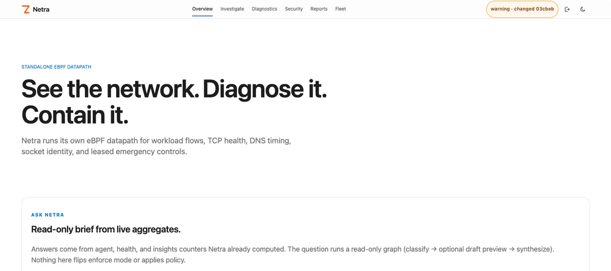
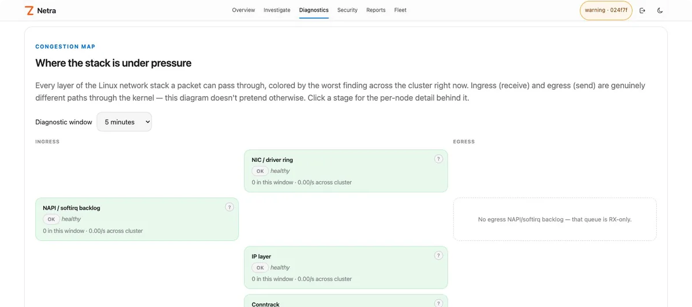
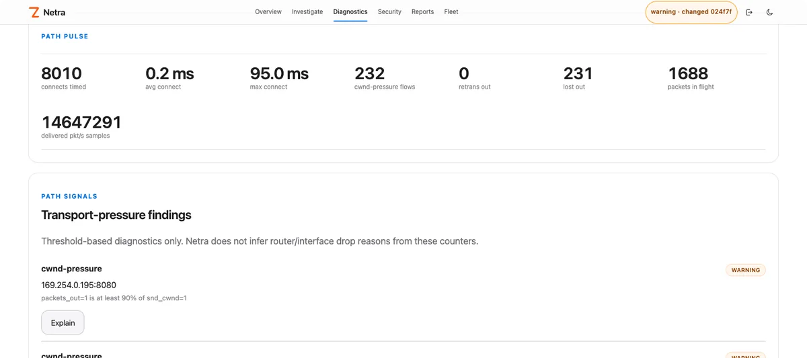
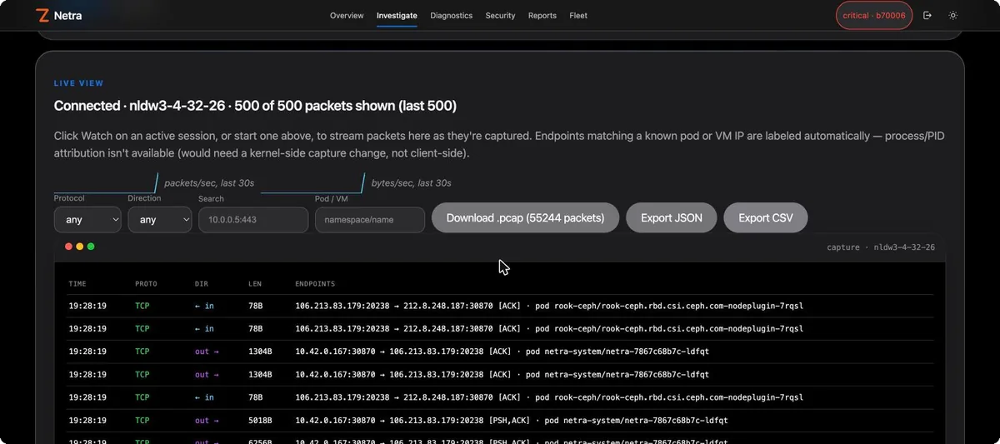
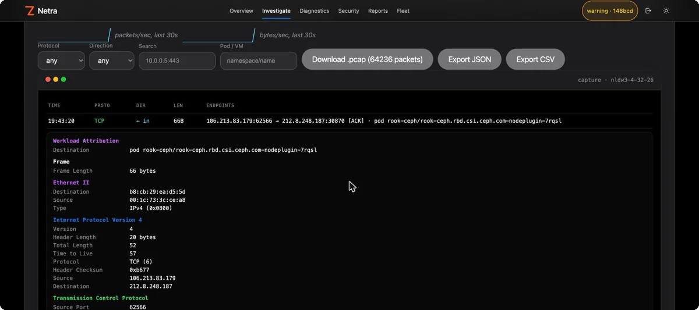
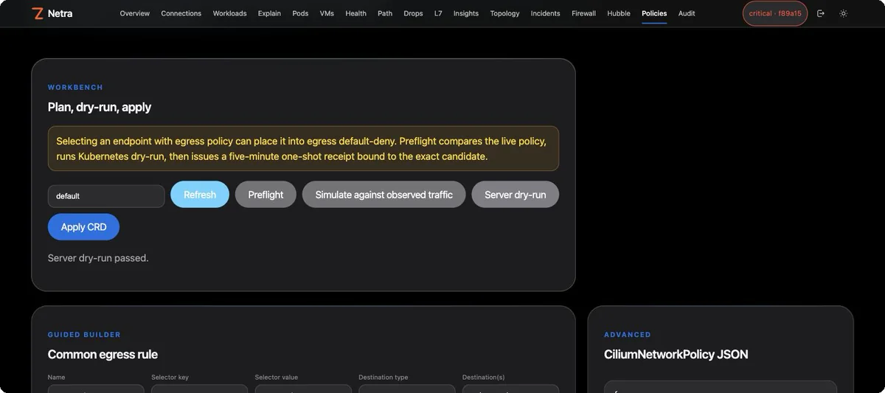
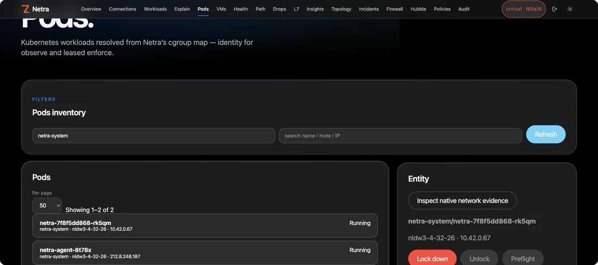

Zyvor · eBPF network observability
Netra
See every packet's story.
Contain the bad ones. Let go automatically. Standalone eBPF network observability and emergency network control for Linux and Kubernetes, on any CNI, with optional Cilium and Hubble enrichment. Kernel drop attribution, path and congestion diagnostics, live packet capture, and leased deny rules that return to observe on their own.
Linux and Kubernetes · any CNI · source-available · Mac app: macOS 15 or later, notarized, free 30-day trial key from sales@zyvor.dev

Observe first. Enforce briefly. Fail open.
Rules can be staged while observing, and nothing is dropped until you enforce. Enforcement is leased: it returns to observe when the lease expires, when the agent cannot refresh controller state, when the controller restarts or when HA leadership changes.
Features
Diagnose
Where the stack is under pressure.
The Congestion Map colors every layer of the Linux network stack by its worst finding, cluster-wide. One click jumps to a capture on the offending node.
Kernel diagnostics
Path
Latency and pressure, per workload.
TCP path diagnostics measure connect latency and transport pressure per workload, plus edge-observed handshake and RTT histograms that see NAT'd flows.
Path diagnostics
Capture
Packets from one node, now.
A filtered, time-bounded capture streams live, color-coded by protocol, with pod and VM attribution. Download the PCAP or export JSON or CSV.
Packet capture
Decode
Wireshark-style detail, one click away.
Expand any live-view row into a layered decode and hex dump, with the workload attribution on top.
Packet capture
Contain
Preview the blast radius first.
Preflight compares the live policy, runs a Kubernetes dry-run, then issues a five-minute one-shot receipt bound to the exact candidate. Policy apply stays plan-token plus risk confirm.
Deny preview
Lock down
One click, through the same safe path.
With Cilium enabled, Pods and VMs get one-click lock down and unlock through the same plan, receipt and apply path as every other rule.
Firewall page
And the rest of the toolbox.
Per-second metrics
Host, network, cgroup, process-group, eBPF and workload RED series every second, with anomaly detection and metric alerts. A spike links to the flows and drops behind it.
Node isolation
A per-node allow-only egress filter in shadow (count what it would block) or enforce, as a standalone TCX program.
MCP server for AI agents
An MCP server for investigation. Mutating tools stay behind NETRA_MCP_ALLOW_MUTATIONS; the built-in AI briefs are read-only.
Export
SIEM (CEF, syslog, JSONL, OTLP), Prometheus, Grafana, Loki, Graphite, and Slack and Teams ChatOps.
Safe to leave running.
Observe-first
Rules can be staged while observing. Nothing is dropped until you enforce.
Leased enforcement
Returns to observe when the lease expires, the agent cannot refresh controller state, the controller restarts or HA leadership changes.
No payloads
No application payloads, no argv or cmdline, no Secret contents. Opt-in sampled sensors keep counts only.
Specs and requirements.
- Runs on
- Linux with cgroup v2 and bpffsPractical baseline Linux 5.8+ (TCX needs 6.6+). Run netra-doctor first.
- Install
- Helm, via netractlA controller and a node agent DaemonSet. No CNI change.
- CNI
- AnyThe Cilium and Hubble integration is opt-in.
- Version
- 0.32.0Controller, agent and netractl.
- Mac app
- macOS 15 or laterApple silicon and Intel. Developer ID signed and notarized. The app runs without a key. For a free 30-day trial key, email sales@zyvor.dev.
- Licence
- Source-availableZyvor Production License v1.0. Free for non-production use.
Honest limits
The Mac app is a client of a Netra controller: it ships no agent and needs a controller to connect to. TLS SNI, HTTP Host and DNS names need Linux 5.17+ and are dropped on older kernels. Sampled L7 and TLS plaintext sensors are opt-in and off by default. The Mac app's source code is private.
Get started in three steps.
Install the controller and agent
make installputsnetractlon your path, andnetractl install --namespace netra-systemdeploys the controller and a node agent DaemonSet with Helm. Runnetra-doctorfirst to check the host.Open the dashboard
Browse to
https://<node-ip>:30870and accept the self-signed certificate. There is no default password: sign in asadminwith the controller API key.Or use the Mac app
Download
Netra-0.4.1.dmgbelow and connect it to your controller. For the free 30-day trial key, write to sales@zyvor.dev.
Linux and Kubernetes (Helm)
make install # netractl to /usr/local/bin
netractl install --namespace netra-system
netractl statusNetra 0.4.1 for Mac · SHA-256
033624d44c07ea6b5cc9f0364343cd08a1a67c369cdb73d809947605f2328a95Verify: echo "033624d44c07ea6b5cc9f0364343cd08a1a67c369cdb73d809947605f2328a95 Netra-0.4.1.dmg" | shasum -a 256 -c
Licence and pricing.
Netra is source-available under the Zyvor Production License v1.0. Non-production use (evaluation, development, testing, research, education) is free. Production use requires a paid commercial licence from Zyvor, offered as an annual enterprise subscription.
Production use
Annual subscription (USD worldwide, excl. tax / INR in India, incl. 18% GST): Essentials USD 15,000 / INR 1,486,800 (50 nodes), Enterprise USD 36,000 / INR 3,568,320 (200 nodes), Scale USD 72,000 / INR 7,136,640 (1,000 nodes). Single node: USD 257 / INR 25,499 per node per year. Founding offer USD 29,000 / INR 2,874,480 for the first three reference customers; paid production pilot USD 6,000 to 12,000 / INR 594,720 to 1,189,440, credited to year one.
Plans, support levels and terms are in the subscription model and the enterprise pricing sheet. Current prices are on zyvor.dev/pricing.
Prices: INR incl. 18% GST in India; US dollars excl. tax elsewhere (VAT, GST or sales tax added where applicable). Pay online by UPI, card or netbanking where a buy page exists; international cards work (charged in rupees); or request a US-dollar invoice by bank transfer. Custom pricing: contact sales@zyvor.dev.
The Mac app comes with a free 30-day trial key: sales@zyvor.dev. Licence terms.
Questions, answered.
Does Netra need Cilium?
No. The node agent owns its own programs and maps below /sys/fs/bpf/netra and works on any CNI. If Cilium and Hubble exist, Netra can manage CiliumNetworkPolicy and show Hubble flows, but both integrations are opt-in.
Does it collect packet payloads?
No application payloads, no argv or cmdline and no Secret contents are collected. Opt-in sampled sensors keep counts only.
What happens to a deny rule if the controller goes away?
Enforcement is leased. It returns to observe when the lease expires, the agent cannot refresh controller state, the controller restarts or HA leadership changes.
Is there a free trial of the Mac app?
Yes: a free 30-day trial key from sales@zyvor.dev.
Which macOS versions does the Mac app need?
macOS 15 or later, on Apple silicon or Intel. It is a client of a running Netra controller.
Will macOS warn me when I open it?
The download is signed with our Developer ID. Notarized by Apple; macOS shows its standard first-open confirmation for apps downloaded from the internet. The SHA-256 is on this page and in the release notes.
How is Netra licensed?
Source-available under the Zyvor Production License v1.0; non-production use is free and production use requires a commercial licence. See Licence and pricing above.
Are the screenshots production traffic?
No. They are captures of the web dashboard on a lab deployment.